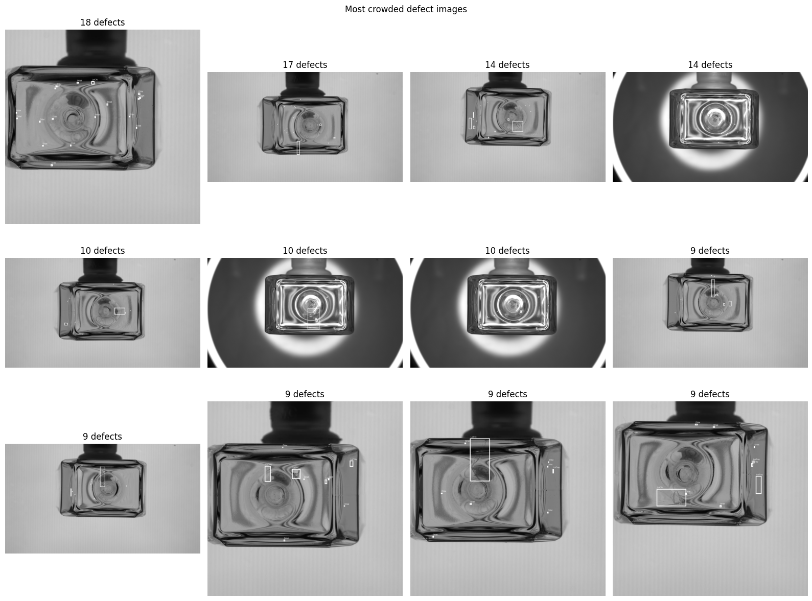

01 — REGION OF INTERESTCrop trước · Resize sau

Ảnh minh họa từ Hình 2.5ẢNH NGUỒN5.328 × 3.000pixel
→CROP ROI3.980 × 3.000giữ 74,70% bề rộng
→ĐẦU VÀO MẠNG960 × 960resize / letterbox
25,30% bề rộng được loại74,70% bề rộng được giữ
Chuyển hệ tọa độ hộp bao
(x₁−x₀, y₁−y₀, x₂−x₀, y₂−y₀)Cắt hộp theo ranh giới ROI, lọc phần vượt biên theo quy tắc và đổi ngược tọa độ khi hiển thị trên ảnh gốc.
Kiểm tra lỗi sát biên ROI
Vị trí x₀,y₀ lấy từ cấu hình crop (chưa định danh tọa độ cụ thể trong báo cáo). Quy tắc giữ/loại hộp giao biên phải nhất quán giữa nhãn và dự đoán.